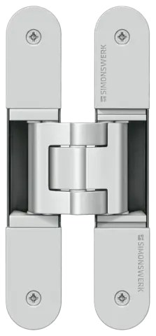

Полностью скрытая система петель: заподлицо и линейно, сочетается почти с любым материалом.
| Нагрузка | от 60 до 300 кг |
| Energy | постоянная передача энергии в полотно |
| Glass · A8 · FR | стекло · облицовка до 8 мм · интумесцентный комплект |
| Регулировка | 3D: ±3 / ±3 / ±1,5 мм |